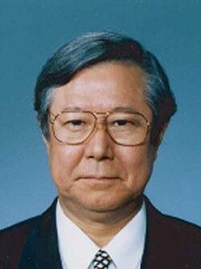

Heisuke Hironaka | |
|---|---|
広中 平祐 | |
 | |
| Born | April 9, 1931 |
| Died | March 18, 2026 (aged 94) Tokyo, Japan |
| Alma mater | Kyoto University (BA) Harvard University (PhD) |
| Spouse | |
| Awards | Asahi Prize (1967) Fields Medal (1970) Order of Culture (1975) Legion of Honour (2004) |
| Scientific career | |
| Fields | Mathematics |
| Institutions | Brandeis University Harvard University Columbia University Kyoto University |
| Thesis | On the Theory of Birational Blowing-up (1960) |
| Oscar Zariski | |
Doctoral students | Dave Bayer Jacob E. Goodman William Haboush Mary Schaps Mark Spivakovsky Allen Tannenbaum Bernard Teissier |
Heisuke Hironaka (広中 平祐, Hironaka Heisuke; April 9, 1931 – March 18, 2026) was a Japanese mathematician who was awarded the Fields Medal in 1970 for his contributions to algebraic geometry.[1]
Hironaka was born in Yamaguchi, Japan on April 9, 1931. He was inspired to study mathematics after a visiting Hiroshima University mathematics professor gave a lecture at his junior high school. Hironaka applied to the undergraduate program at Hiroshima University, but was unsuccessful. However, the following year, he was accepted into Kyoto University to study physics, entering in 1949 and receiving his Bachelor of Science and Master of Science from the university in 1954 and 1956. Hironaka initially studied physics, chemistry, and biology, but during his third year as an undergraduate, he chose to move to taking courses in mathematics.[2]
The same year, Hironaka was invited to a seminar group led by Yasuo Akizuki, who would have a major influence on Hironaka's mathematical development. The group, informally known as the Akizuki School, discussed cutting-edge research developments including the resolution of singularities problem for which Hironaka later received the Fields Medal.[3] Hironaka has described his interest in this problem as having the logic and mystery of "a boy falling in love with a girl."[4] In 1956, Akizuki invited then Harvard professor Oscar Zariski to Kyoto University. Hironaka took the opportunity to present his own research to Zariski, who suggested that Hironaka move to Harvard University to continue his studies.[2]
In 1957, Hironaka moved to the United States to attend Harvard University as a doctoral student under the direction of Zariski.[5] Hironaka's algebra background, developed under Akizuki, allowed him to bring fresh insights into mathematics discussions in Harvard, which placed a greater emphasis on geometric perspectives. From 1958 to 1959, Alexander Grothendieck visited Harvard University and was another important influence on Hironaka, inviting him to the Institut des Hautes Études Scientifique (IHES) in Paris.[3]
Returning to Harvard in 1960, Hironaka received his PhD for his thesis On the Theory of Birational Blowing-up.[6]
Hironaka was an Associate Professor of Mathematics at Brandeis University from 1960 to 1963. He taught at Columbia University from 1964 to 1968 and became a professor of mathematics at Harvard University from 1968 until becoming emeritus in 1992.
He returned to Japan for a joint professorship at the Research Institute for Mathematical Sciences and Kyoto University from 1975 to 1983 and was the Institute Director from 1983 to 1985.[7]
Hironaka was the president of Yamaguchi University from 1996 to 2002.[8]
In 1960, Hironaka introduced Hironaka's example, showing that a deformation of Kähler manifolds need not be Kähler. The example is a 1-parameter family of smooth compact complex 3-manifolds such that most fibers are Kähler (and even projective), but one fiber is not Kähler. This can be used to show that several other plausible statements holding for smooth varieties of dimension at most 2 fail for smooth varieties of dimension at least 3.[9]
In 1964, Hironaka proved that singularities of algebraic varieties admit resolutions in characteristic zero. Hironaka was able to give a general solution to this problem, proving that any algebraic variety can be replaced by (more precisely is birationally equivalent to) a similar variety that has no singularities.[2]
Hironaka recalled that he felt very close to approaching the solution while studying in Harvard. Then, soon after getting his first teaching position at Brandeis, he realized that if he combined his commutative algebra experience from Kyoto, geometry of polynomials from Harvard, and globalization technique from IHES, he had everything he needed to solve the problem.[3]
In 2017 he posted to his personal webpage a manuscript that claims to prove the existence of a resolution of singularities in a positive characteristic.[10]
Hironaka has been active in promoting mathematical education, particularly in Japan and South Korea. Hironaka wrote or co-authored 26 books on mathematics and other topics.[4]
In 1980, he started a summer seminar for Japanese high school students, and later created a program for Japanese and American college students. In 1984 he established the Japanese Association for Mathematical Sciences (JAMS) to fund these seminars, serving as executive director.[3] Additional funding was received from corporations and the Japanese government. Harvard emeritus math professor Shing-Tung Yau noted that "In the 1980s there were few domestic grant opportunities for foreign travel or exchange [...] today, one can see the fruits of Hironaka’s efforts in the number of former JAMS fellows who have become professors of mathematics across the United States and Japan."[4]
As visiting professor at Seoul National University from 2008 to 2009, Hironaka mentored undergraduate student June Huh, a former high school drop-out and aspiring poet, encouraging his interest in pursuing math for graduate school. Huh won a Fields medal in 2022 for the linkages he found between algebraic geometry and combinatorics.[11]
Hironaka married Wakako Kimoto in 1960, a Brandeis Wien International Scholar who entered Japanese politics through her election to the House of Councillors in 1986. They had a son Jo, and daughter Eriko, who is also a mathematician.[2][12]
On his love for mathematics, Hironaka said "I accumulate anything to do with numbers. For instance, I have more than 10,000 photos of flowers and leaves. I like to just count the numbers and compare them. I am so pleased to be a mathematician, because I can see the mathematical interest in things."[3]
Hironaka died in Tokyo on March 18, 2026, at the age of 94.[13][14]
Hironaka received a Fields Medal, the highest honor in mathematics, at the International Congress of Mathematicians at Nice in 1970 at 39, just under the 40 year age limit.
List of awards:
{{cite web}}: CS1 maint: deprecated archival service (link)
{{cite web}}: CS1 maint: deprecated archival service (link)
{{cite web}}: CS1 maint: deprecated archival service (link)
{{cite web}}: CS1 maint: deprecated archival service (link)
{{cite web}}: CS1 maint: deprecated archival service (link)
{{cite web}}: CS1 maint: deprecated archival service (link)
{kind=link}